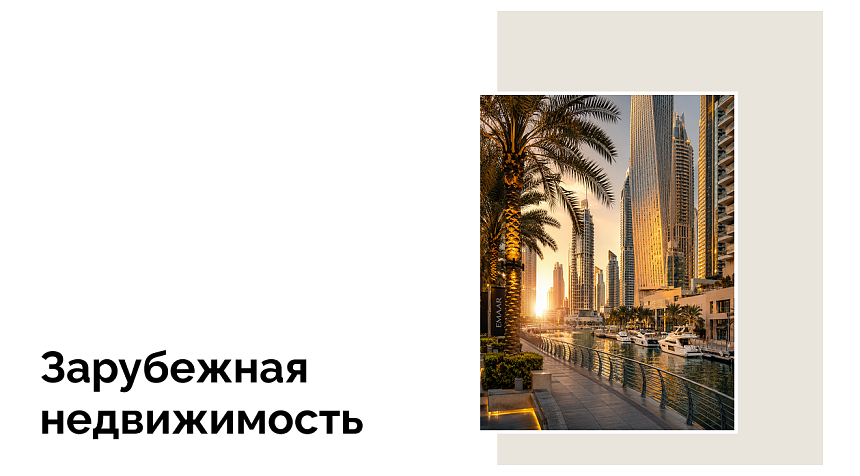

<div id="catalog-news" class="catalog-page-section" data-v-f0be9abb=""><section class="news-section" data-v-f0be9abb="" data-v-411e09d7=""><div class="base-container" data-v-411e09d7=""><div class="news-section__inner" data-v-411e09d7=""><div class="news-section__header" data-v-411e09d7=""><p class="news-section__eyebrow" data-v-411e09d7="">Медиа Barnes</p><h2 class="news-section__title" data-v-411e09d7="">Актуальные статьи по курортной недвижимости</h2></div><div data-v-411e09d7="" class="splide news-section__slider splide--slide splide--ltr splide--draggable is-active is-overflow is-initialized" aria-label="Новости" id="splide02" role="region" aria-roledescription="carousel"><div class="splide__track splide__track--slide splide__track--ltr splide__track--draggable" id="splide02-track" style="padding-left: 0px; padding-right: 0px;" aria-live="polite" aria-atomic="true"><ul class="splide__list" id="splide02-list" role="presentation"><li data-v-411e09d7="" class="splide__slide is-active is-visible" id="splide02-slide01" role="group" aria-roledescription="slide" aria-label="1 of 6"><article data-v-411e09d7="" class="news-section__card"><a data-v-411e09d7="" class="news-section__card-link" href="https://front.barnes.vsavr.ru/media/novosti/forbes-obnovil-mirovoy-reyting-gorodov-po-chislu-milliarderov-moskva-opustilas-na-trete-mesto/"><div data-v-411e09d7="" class="news-section__content"><p data-v-411e09d7="" class="news-section__category">Forbes обновил мировой рейтинг городов по числу миллиардеров: Москва опустилась на третье место</p><span data-v-411e09d7="" class="news-section__read-more">Читать подробнее</span></div></a></article></li><li data-v-411e09d7="" class="splide__slide is-visible is-next" id="splide02-slide02" role="group" aria-roledescription="slide" aria-label="2 of 6"><article data-v-411e09d7="" class="news-section__card"><a data-v-411e09d7="" class="news-section__card-link" href="https://front.barnes.vsavr.ru/media/novosti/investitsii-v-turizm-altayskogo-kraya-vyrosli-v-poltora-raza-za-god/"><div data-v-411e09d7="" class="news-section__content"><p data-v-411e09d7="" class="news-section__category">Инвестиции в туризм Алтайского края выросли в полтора раза за год</p><span data-v-411e09d7="" class="news-section__read-more">Читать подробнее</span></div></a></article></li><li data-v-411e09d7="" class="splide__slide is-visible" id="splide02-slide03" role="group" aria-roledescription="slide" aria-label="3 of 6"><article data-v-411e09d7="" class="news-section__card"><a data-v-411e09d7="" class="news-section__card-link" href="https://front.barnes.vsavr.ru/media/novosti/moskva-voshla-v-top-5-gorodov-mira-po-tsenam-na-elitnoe-zhile/"><div data-v-411e09d7="" class="news-section__content"><p data-v-411e09d7="" class="news-section__category">Москва вошла в топ-5 городов мира по ценам на элитное жилье</p><span data-v-411e09d7="" class="news-section__read-more">Читать подробнее</span></div></a></article></li><li data-v-411e09d7="" class="splide__slide" id="splide02-slide04" role="group" aria-roledescription="slide" aria-label="4 of 6" aria-hidden="true"><article data-v-411e09d7="" class="news-section__card"><a data-v-411e09d7="" class="news-section__card-link" href="https://front.barnes.vsavr.ru/media/novosti/sostoyatelnye-pokupateli-stimuliruyut-rynok-brendovoy-nedvizhimosti-v-dubae/" tabindex="-1"><div data-v-411e09d7="" class="news-section__content"><p data-v-411e09d7="" class="news-section__category">Состоятельные покупатели стимулируют рынок брендовой недвижимости в Дубае</p><span data-v-411e09d7="" class="news-section__read-more">Читать подробнее</span></div></a></article></li><li data-v-411e09d7="" class="splide__slide" id="splide02-slide05" role="group" aria-roledescription="slide" aria-label="5 of 6" aria-hidden="true"><article data-v-411e09d7="" class="news-section__card"><a data-v-411e09d7="" class="news-section__card-link" href="https://front.barnes.vsavr.ru/media/novosti/stoimost-nedvizhimosti-delyuks-segmenta-vyrosla-v-tretem-kvartale-2024/" tabindex="-1"><div data-v-411e09d7="" class="news-section__content"><p data-v-411e09d7="" class="news-section__category">Стоимость недвижимости делюкс-сегмента выросла в третьем квартале 2024</p><span data-v-411e09d7="" class="news-section__read-more">Читать подробнее</span></div></a></article></li><li data-v-411e09d7="" class="splide__slide" id="splide02-slide06" role="group" aria-roledescription="slide" aria-label="6 of 6" aria-hidden="true"><article data-v-411e09d7="" class="news-section__card"><a data-v-411e09d7="" class="news-section__card-link" href="https://front.barnes.vsavr.ru/media/novosti/opublikovan-reyting-gorodov-po-urovnyu-restorannogo-obsluzhivaniya/" tabindex="-1"><div data-v-411e09d7="" class="news-section__content"><p data-v-411e09d7="" class="news-section__category">Опубликован рейтинг городов по уровню ресторанного обслуживания</p><span data-v-411e09d7="" class="news-section__read-more">Читать подробнее</span></div></a></article></li></ul></div></div><div class="news-section__footer" data-v-411e09d7=""><div class="news-section__nav" data-v-411e09d7=""><button type="button" class="news-section__nav-btn" disabled="" aria-label="Предыдущие новости" data-v-411e09d7=""><span class="ui-icon ui-icon-current news-section__nav-icon" data-v-411e09d7="" data-v-8bd2f545=""><svg width="11" height="22" viewBox="0 0 11 22" fill="none" xmlns="http://www.w3.org/2000/svg">
<path d="M9.6582 21.3262L0.658204 10.8262L9.6582 0.326171" stroke="#656462"></path>
</svg>
</span></button><button type="button" class="news-section__nav-btn" aria-label="Следующие новости" data-v-411e09d7=""><span class="ui-icon ui-icon-current news-section__nav-icon" data-v-411e09d7="" data-v-8bd2f545=""><svg width="11" height="22" viewBox="0 0 11 22" fill="none" xmlns="http://www.w3.org/2000/svg">
<path d="M0.379883 21.3262L9.37988 10.8262L0.379884 0.326171" stroke="#656462"></path>
</svg>
</span></button></div><a class="ui-more-link news-section__action" data-v-411e09d7="" href="https://front.barnes.vsavr.ru/media/tag/investitsii-v-kurortnuyu-nedvizhimost-rossii/"><!--[--><span class="ui-more-link__label"><!--[-->Читать все новости<!--]--></span><span class="ui-more-link__icon" aria-hidden="true"><svg viewBox="0 0 16 16" focusable="false"><path d="M3 13 13 3M5 3h8v8" fill="none" stroke="currentColor" stroke-linecap="round" stroke-linejoin="round" stroke-width="1.25"></path></svg></span><!--]--></a></div></div></div></section></div>
